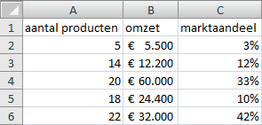
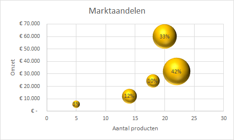
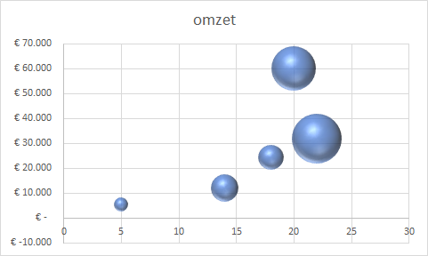

Een bellendiagram kun je gebruiken wanneer je de relatie tussen drie numerieke
variabelen weer wilt geven.
Een bellendiagram is een uitbreiding op een spreidingsdiagram. Bij de laatste worden
twee numerieke variabelen (X en Y) tegen elkaar uitgezet. Bij een bellendiagram
wordt nog een derde variabele (Z) gebruikt. De punt in het spreidingsdiagram wordt
nu vervangen door een bel (of cirkel). Het middelpunt van de bel wordt door de X en
Y variabele bepaald en de grootte (straal) van de bel door de Z variabele. Daarnaast
kunnen ook andere kenmerken van een bel, zoals de kleur, gebruikt worden om nog
extra onderscheidingen aan te brengen. Deze zijn dan op kwalitatieve, niet-numerieke
waarden, gebaseerd.
Opdracht
In de volgende afbeelding is te zien hoe het marktaandeel gerelateerd is aan de omzet
en het aantal producten.
Figuur 1: Marktaandeel

De gegevens moeten in een bellendiagram worden weergegeven, zoals in de volgende
afbeelding.
Figuur 2: Bellendiagram voor marktaandelen

Bestand:Grafiek_bellen.xlsx
Open het hulpbestand.
Selecteer een willekeurige cel in het gegevensgebied.
Zorg voor een juiste opmaak voor de waarden voor omzet en marktaandeel.
Waarschuwing: Een goede layout van de brongegevens zorgt er voor dat je deze opmaak ook in
de grafiek krijgt.
Kies het menu Invoegen > Spreidings- of bellendiagram invoegen (groep
Grafieken) > 3D-bel.
Figuur 3: Standaard bellendiagram

Wijzig de grafiektitel in Marktaandelen.
Voeg een horizontale astitel toe met de tekst Aantal
producten.
Voeg een verticale astitel toe met de tekst Omzet.
Wijzig de schaal van de verticale as zo dat deze loopt van
0 t/m 70000.
Tip: Zet bij de as opties het minimum vast op 0 en het maximum op
70000.
Voeg gegevenslabels toe met de positie hiervan gecentreerd.
Er worden gegevenslabels toegevoegd, echter zijn het niet de gewenste.
In plaats van de percentages van het marktaandeel staan er de bedragen voor de
omzet. Dit wordt in de volgende stap aangepast.
Selecteer de gegevenslabels, dan rechter muisklik > Gegevenslabels opmaken.
Het taakvenster gegevenslabels opmaken wordt weergegeven.
Selecteer onder Label bevat alleen Belgrootte.
Selecteer de bellen verander de kleur in een goudkleurige.